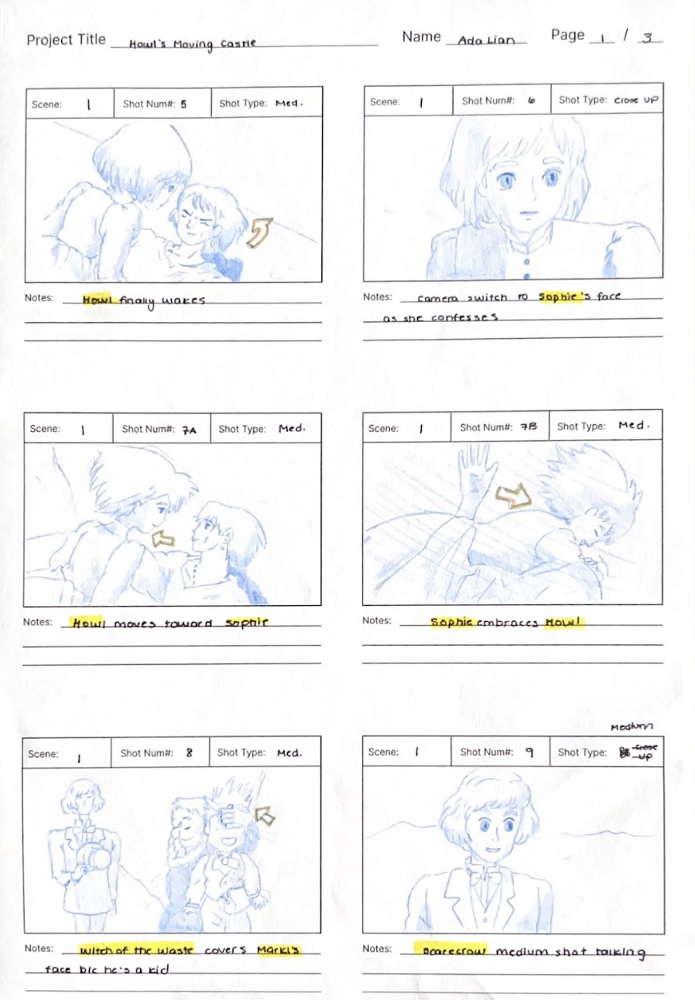
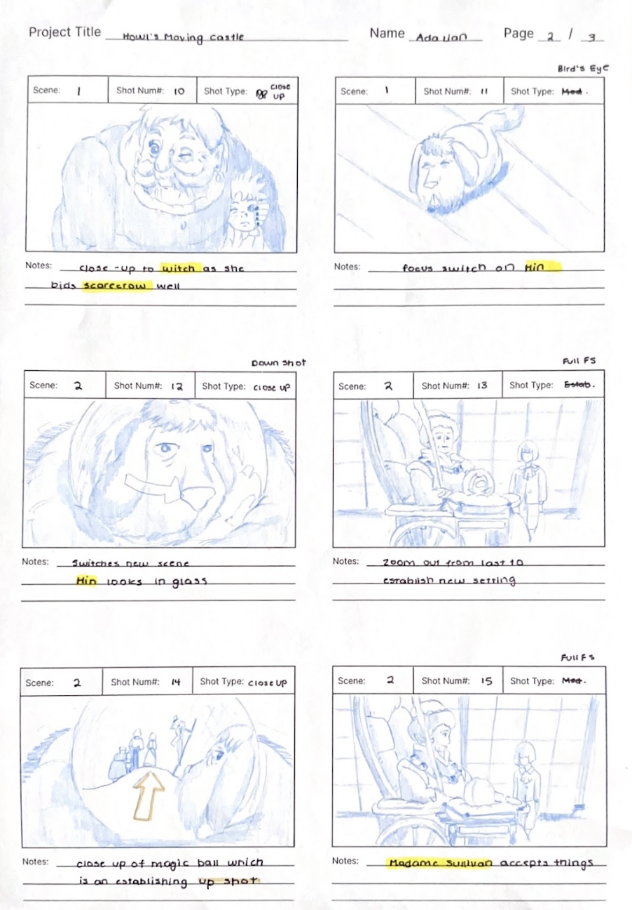
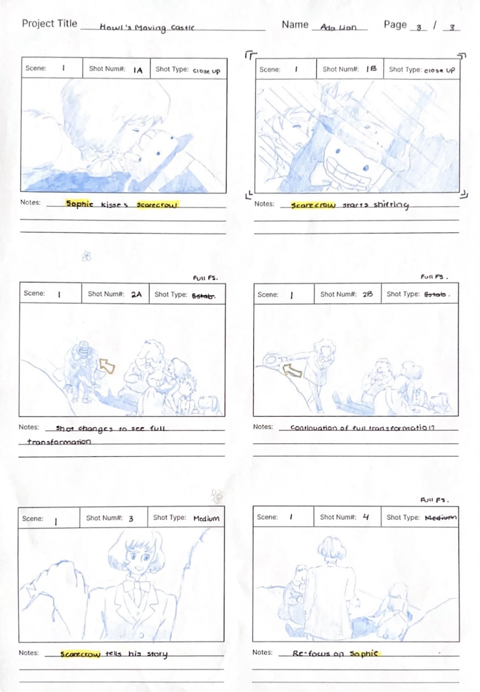

April 22, 2023
For my Reverse Storyboard, I referred to Howl's Moving castle's. This scene occurs in 1:53:00, which is toward the end. Throughout the 18 boards, there are 2 main scenes one which is the outside greenery and the other is Madame Sullivan's castle. Throughout the scenes there were also different characters and movements.
For the movements, I utilized arrows in order to guide the audience eye's, and also emphasize the action more, such as taking off the hat or Sophie hugging Howl. For characters, I highlighted the characters names in order to address the specific characters in the shot. I also utilized lines in order to emphasize fast movements that are hard to draw. This is scene in the scarecrow transformation scene as the full transformation is hard to depict.
In these specific scenes, the shots followed the specific speaker in the setting, sometimes it could be the scarecrow, Sophie, or Hin. To do so, the director utilizes close up shots, and uses the camera to follow the action and perspective of the specific character.    Return to Classes →